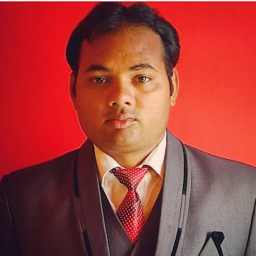

Vibration · HOXFEM
Cracked laminates that vibrate
A crack lowers stiffness and changes mode shapes. I extended HOXFEM to free flexural vibration of cracked laminated, sandwich and porous FG plates.
Related paper ↗
Postdoctoral Researcher · School of Computing and Artificial Intelligence, Nazarbayev University, Astana, Kazakhstan
I model how composites crack
I am a postdoctoral researcher at Nazarbayev University, working on the BRAVE project — buckling-resistant double- and multi-layered shells with complex topologies for aerospace and land vehicles. My current work looks at how CFRP sandwich panels with corrugated cores respond to oblique impact, and how tubular sandwich structures with power-law corrugated cores carry compression, torsion and bending.
I earned my PhD in Mechanical Design from IIT Mandi, where I developed a higher-order extended finite element method (HOXFEM) for fracture and vibration analysis of cracked orthotropic composites, and trained neural-network surrogates on its results. During the PhD I spent a year at the University of Alberta, Canada, as a SERB–UAlberta Overseas Visiting Doctoral Fellow, showing that XFEM fracture parameters for pipeline steel are not unique and proposing a way to pin them down.
Before that I worked as a Junior Research Fellow on a DRDO project on bonded composite patch repair of cracked aircraft panels, and ran low-cycle fatigue experiments on RAFM steel at IGCAR Kalpakkam during my M.Tech at NIT Srinagar. The common thread is simple: understanding how damaged structures behave, so they can be designed and repaired with confidence.
Each animation below sketches one problem I have worked on. They are illustrations of the ideas, not simulation output.
In XFEM the crack does not have to follow the mesh. Nodes of elements the crack cuts get a jump (Heaviside) enrichment, and nodes around the tip get crack-tip functions that capture the singular stress field.
My higher-order XFEM adds more terms to the tip enrichment and uses variable-node elements, so stress intensity factors stay accurate on coarser meshes.
A crack lowers stiffness and changes mode shapes. I extended HOXFEM to free flexural vibration of cracked laminated, sandwich and porous FG plates.
Related paper ↗An impactor strikes a CFRP sandwich panel at an angle. I track contact force, dent depth, and delamination, and compare double-sinusoidal corrugated cores with honeycomb.
Under review, Int. J. Damage Mechanics (Q1)Tubes with power-law corrugated cores under axial compression, torsion and bending. The core profile changes how load spreads between the face sheets.
In preparation, 2026Under cyclic load a crack grows slowly, then speeds up. I modelled this in CNT-reinforced polymers, FRP laminates and patch-repaired aircraft panels.
Related paper ↗Once trained on XFEM results, a small neural network returns natural frequencies or fatigue life almost instantly, so designers can explore many crack cases quickly.
Related paper ↗A bonded composite patch carries load across a crack in an aluminium aircraft panel. My XFEM code predicted stress intensity factors and fatigue life with and without the patch, and optimised its shape and size.
Related paper ↗Higher-order crack-tip enrichment and variable-node elements reach accurate stress intensity factors on far coarser meshes than standard XFEM, which saves computing time.
Related paper ↗Low-cycle fatigue tests at 823 K and ±0.6% strain: the hysteresis loops shrink as the aged steel softens. Tests stopped at 5, 10, 30 and 50% of life were studied with EBSD and XRD.
Related paper ↗Porosity in a functionally graded plate is never known exactly. Stochastic XFEM runs many random realisations of the cracked plate and builds the distribution of its natural frequency.
Related paper ↗In a compact-tension (CT) specimen, the longitudinal strain LE22 above the crack peaks just ahead of the tip and moves forward with it as the crack grows. The contour is shown only for the half above the crack plane.
Three XFEM parameter sets give almost the same Force–CMOD curve, yet their crack tips end up in different places: crack length differs by about 7%. Tracking the maximum LE22 locates the true tip and picks the unique parameter set.
Related paper ↗Oblique impact of double-sinusoidal corrugated-core CFRP sandwich panels versus honeycomb cores; tubular sandwich structures with power-law corrugated cores.
Tensile, CT and SENB specimens; cohesive damage area, crack length and longitudinal strain; a criterion to track the crack tip during evolution.
Crack-tip enrichments and variable-node elements for SIFs, extended to cracked laminates and sandwich plates, with ANN surrogates.
XFEM code for SIF and fatigue life of patch-repaired aluminium panels; scarf patch shape and size optimised under thermo-mechanical load.
From mechanical engineering in Kanpur to composite structures in Astana.
Nazarbayev University, Astana
University of Alberta, Edmonton
Indian Institute of Technology Mandi
NIT Srinagar & IGCAR Kalpakkam
KIT Kanpur
The people who have guided my research, from M.Tech to postdoc.
Prof. Andrey Melnikov
Postdoctoral supervisor · PI, BRAVE project
School of Computing and Artificial Intelligence, Nazarbayev University, Kazakhstan
Prof. Christos Spitas
Postdoctoral supervisor · BRAVE project
Nazarbayev University, Astana, Kazakhstan
Prof. Samer Adeeb
Host supervisor · Visiting doctoral research (2024–25)
Civil and Environmental Engineering, University of Alberta, Canada
Prof. Himanshu Pathak
PhD supervisor · PI, DRDO JRF project
School of Mechanical and Materials Engineering, IIT Mandi, India
Prof. Ghulam Ashraf Ul Harmain
M.Tech supervisor
Department of Mechanical Engineering, NIT Srinagar, India
Dr. Vani Shankar
M.Tech project mentor · low-cycle fatigue of RAFM steel
Indira Gandhi Centre for Atomic Research (IGCAR), Kalpakkam, India
Citation counts from Google Scholar, October 2026.
No publications match that search.
Quartiles and SJR are SCImago/Scopus values for the latest available year and change annually. Citation counts from Google Scholar, October 2026.
International and national conferences where I have presented my work, with the papers that came out of them.
Conferences, talks, labs and moments along the way.
Open to collaborations on computational mechanics of composites, fracture and impact modelling, and to research positions in FEM and composite structures.